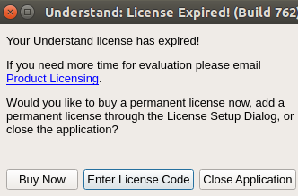

WEEK 1
格式说明：
熟悉环境中遇到的问题：前面加上Q字符
对问题Qi的解答 在Ai里
视频相关的地方V开头 在x.y xx:yy (视频x.y章节，第xx分钟第yy秒)
4/16
熟悉实验环境，环境为virtual box上的mooc-os-2015.vdi.xz
Q1：Understand过期了

A1：已解决
https://segmentfault.com/q/1010000003480440
V1: 2.7 15:15 演示了understand导入项目
4/17
读lab1的源码
根据lab1 练习1 make完了 labcodes里make 出来的和 labcodes_ans里面make出来的不一样
Q2：understand导入项目的时候 发现.S文件没有导入进去
A2：在Project->Configure Project里面添加Assembly 然后在Project->Rescan project directories
练习2中make lab1-mon来调试bootload第一条指令(make 里面写东西完全不同QAQ)
前2条指令为CLI 和 CLD
CLI = Clear Interrupt CLD = Clear Director
练习3中 是分析bootloader进入保护模式的过程 了解为何开启A20 如何开启A20
4/18
主要学习github的知识 和 部分markdown的语法
注意Markdown换行 是要有两个换行符github
删除一个repository 点到那个repository中去 然后在其Setting中 在最后一行有删除选项
git remote add origin https://github.com/suewiq/os-learning
出现一个问题not a repository; 重新git init 问题解决
git add .
git commit -m "commit message" ( 注意每次commit之前要add)
git push -u origin master
出现一个问题 error:src refspec master does not match any; error: failed to push some refs to ...
解决方法 设置global的user.email和user.name
又出现一个问题non-fast-forward
之前在github官网上branch出了gh-pages(branch必须叫这个名字才能配置成网页)但是网页上显示的不是我想要的
问题出在：我应该将gitbook serve生成的东西放到gh-pages里面建立分支的指令 git checkout -b gh-pages此时可以把除了.git文件夹以外全部删掉 换上由git serve生成的_book里面的内容 接着git add . ;git commit -m "arbitrary message";git push origin gh-pages